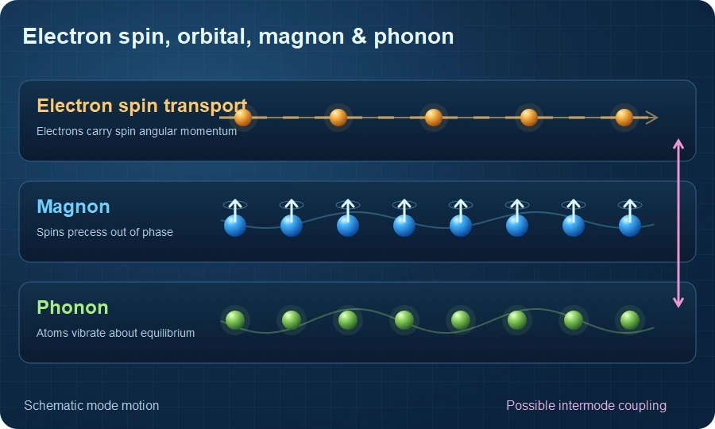
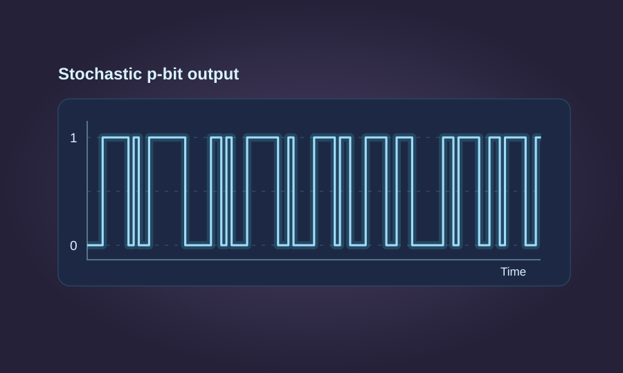

Efficient Write Channels for Next-Generation MRAM
Design spin and orbital current sources that deliver stronger torque for fast, energy-efficient magnetic switching.
- Dr. Dong-Soo Han (PI)
- Mr. Seung-Jin Kang
- Ms. Siyeon An
- Dr. Jae-Hyun Ha
We study how spin, orbital motion and lattice vibrations carry and exchange angular momentum. We use that physics to design magnetic materials, devices and systems for memory, sensing and computing.
Identify how charge, spin, orbital motion and lattice vibrations produce, carry and exchange energy and information.
Design materials and interfaces to tune electronic, magnetic, thermal and mechanical responses.
Build prototypes and measure how they sense, convert, store or process signals.
Integrate devices into circuits and systems. Evaluate energy, reliability and performance in real applications.
Feedback loop. Application requirements and device measurements feed back into materials design and fundamental questions about transport and switching.

Design spin and orbital current sources that deliver stronger torque for fast, energy-efficient magnetic switching.

Investigate how charge carriers, spin waves and lattice vibrations exchange energy and angular momentum.

Use crystal and interface symmetry to uncover new electronic, spin and chiral responses, then tune them for device control.

Keep neural-network weights in MRAM and compute dot products where those weights are stored.

Use stochastic magnetic tunnel junctions for p-bit sampling, inference and optimization.
We welcome inquiries from prospective team members.
View details for Probabilistic Computing